Code
pacman::p_load(tidyverse, tsibble, feasts, fable, seasonal)For the purpose of this hands-on exercise, the following R packages will be used
pacman::p_load(tidyverse, tsibble, feasts, fable, seasonal)lubridate provides a collection to functions to parse and wrangle time and date data.
tsibble, feasts, fable and fable.prophet are belong to tidyverts, a family of tidy tools for time series data handling, analysis and forecasting.
tsibble provides a data infrastructure for tidy temporal data with wrangling tools. Adapting the tidy data principles, tsibble is a data- and model-oriented object.
feasts provides a collection of tools for the analysis of time series data. The package name is an acronym comprising of its key features: Feature Extraction And Statistics for Time Series.
We use the read_csv() of readr package to import visitor_arrivals_by_air.csv file into R environment
ts_data <- read_csv("data/visitor_arrivals_by_air.csv")In the code chunk below, dmy() of lubridate package is used to convert data type of Month-Year field from Character to Date.
ts_data$`Month-Year` <- dmy(
ts_data$`Month-Year`)ts object versus tibble objecttibble object
ts_data# A tibble: 144 × 34
`Month-Year` `Republic of South Africa` Canada USA Bangladesh Brunei China
<date> <dbl> <dbl> <dbl> <dbl> <dbl> <dbl>
1 2008-01-01 3680 6972 31155 6786 3729 79599
2 2008-02-01 1662 6056 27738 6314 3070 82074
3 2008-03-01 3394 6220 31349 7502 4805 72546
4 2008-04-01 3337 4764 26376 7333 3096 76112
5 2008-05-01 2089 4460 26788 7988 3586 64808
6 2008-06-01 2515 3888 29725 8301 5284 55238
7 2008-07-01 2919 5313 33183 9004 4070 80747
8 2008-08-01 2471 4519 27427 7913 4183 66625
9 2008-09-01 2492 3421 21588 7549 3160 52649
10 2008-10-01 3023 4756 25112 7527 2983 54423
# ℹ 134 more rows
# ℹ 27 more variables: `Hong Kong SAR (China)` <dbl>, India <dbl>,
# Indonesia <dbl>, Japan <dbl>, `South Korea` <dbl>, Kuwait <dbl>,
# Malaysia <dbl>, Myanmar <dbl>, Pakistan <dbl>, Philippines <dbl>,
# `Saudi Arabia` <dbl>, `Sri Lanka` <dbl>, Taiwan <dbl>, Thailand <dbl>,
# `United Arab Emirates` <dbl>, Vietnam <dbl>, `Belgium & Luxembourg` <dbl>,
# Finland <dbl>, France <dbl>, Germany <dbl>, Italy <dbl>, …ts object versus tibble objectts object - converting it into a tibble object
ts_data_ts <- ts(ts_data)
head(ts_data_ts) Month-Year Republic of South Africa Canada USA Bangladesh Brunei China
[1,] 13879 3680 6972 31155 6786 3729 79599
[2,] 13910 1662 6056 27738 6314 3070 82074
[3,] 13939 3394 6220 31349 7502 4805 72546
[4,] 13970 3337 4764 26376 7333 3096 76112
[5,] 14000 2089 4460 26788 7988 3586 64808
[6,] 14031 2515 3888 29725 8301 5284 55238
Hong Kong SAR (China) India Indonesia Japan South Korea Kuwait Malaysia
[1,] 17103 41639 62683 37673 27937 284 31352
[2,] 21089 37170 47834 35297 22633 241 35030
[3,] 23230 44815 64688 42575 22876 206 37629
[4,] 17688 49527 58074 26839 20634 193 37521
[5,] 19340 67754 57089 30814 22785 140 38044
[6,] 19152 57380 70118 31001 22575 354 40419
Myanmar Pakistan Philippines Saudi Arabia Sri Lanka Taiwan Thailand
[1,] 5269 1395 18622 406 5289 13757 18370
[2,] 4643 1027 21609 591 4767 13921 16400
[3,] 6218 1635 28464 626 4988 11181 23387
[4,] 7324 1232 30131 644 7639 11665 24469
[5,] 5395 1306 30193 470 5125 11436 21935
[6,] 5542 1996 25800 772 4791 10689 19900
United Arab Emirates Vietnam Belgium & Luxembourg Finland France Germany
[1,] 2652 10315 1341 1179 6918 11982
[2,] 2230 13415 1449 1207 7876 13256
[3,] 3353 14320 1674 1071 8066 15185
[4,] 3245 15413 1426 768 8312 11604
[5,] 2856 14424 1243 690 7066 9853
[6,] 4292 21368 1255 624 5926 9347
Italy Netherlands Spain Switzerland United Kingdom Australia New Zealand
[1,] 2953 4938 1668 4450 41934 71260 7806
[2,] 2704 4885 1568 4381 44029 45595 4729
[3,] 2822 5015 2254 5015 49489 53191 6106
[4,] 3018 4902 1503 5434 35771 56514 7560
[5,] 2165 4397 1365 4427 24464 57808 9090
[6,] 2022 4166 1446 3359 22473 63350 9681tibble object to tsibble objectThe following code snippet converts ts_data from a tibble to a tsibble using the as_tsibble() function from the tsibble package in R.
ts_tsibble <- ts_data %>%
mutate(Month = yearmonth(`Month-Year`)) %>%
as_tsibble(index = `Month`)Visualizing the tsibble object:
ts_tsibble# A tsibble: 144 x 35 [1M]
`Month-Year` `Republic of South Africa` Canada USA Bangladesh Brunei China
<date> <dbl> <dbl> <dbl> <dbl> <dbl> <dbl>
1 2008-01-01 3680 6972 31155 6786 3729 79599
2 2008-02-01 1662 6056 27738 6314 3070 82074
3 2008-03-01 3394 6220 31349 7502 4805 72546
4 2008-04-01 3337 4764 26376 7333 3096 76112
5 2008-05-01 2089 4460 26788 7988 3586 64808
6 2008-06-01 2515 3888 29725 8301 5284 55238
7 2008-07-01 2919 5313 33183 9004 4070 80747
8 2008-08-01 2471 4519 27427 7913 4183 66625
9 2008-09-01 2492 3421 21588 7549 3160 52649
10 2008-10-01 3023 4756 25112 7527 2983 54423
# ℹ 134 more rows
# ℹ 28 more variables: `Hong Kong SAR (China)` <dbl>, India <dbl>,
# Indonesia <dbl>, Japan <dbl>, `South Korea` <dbl>, Kuwait <dbl>,
# Malaysia <dbl>, Myanmar <dbl>, Pakistan <dbl>, Philippines <dbl>,
# `Saudi Arabia` <dbl>, `Sri Lanka` <dbl>, Taiwan <dbl>, Thailand <dbl>,
# `United Arab Emirates` <dbl>, Vietnam <dbl>, `Belgium & Luxembourg` <dbl>,
# Finland <dbl>, France <dbl>, Germany <dbl>, Italy <dbl>, …ts_longer <- ts_data %>%
pivot_longer(cols = c(2:34),
names_to = "Country",
values_to = "Arrivals")ts_longer %>%
filter(Country == "Vietnam") %>%
ggplot(aes(x = `Month-Year`,
y = Arrivals))+
geom_line(size = 1)
ggplot(data = ts_longer,
aes(x = `Month-Year`,
y = Arrivals,
color = Country))+
geom_line(size = 0.5) +
theme(legend.position = "bottom",
legend.box.spacing = unit(0.5, "cm"))
The facet_wrap() function from the ggplot2 package is used to create small multiple line graphs, also known as a trellis plot.

To effectively visualize time-series data, we need to transform the data frame from wide to long format. This can be achieved using the pivot_longer() function from the tidyr package, as demonstrated in the code below.
tsibble_longer <- ts_tsibble %>%
pivot_longer(cols = c(2:34),
names_to = "Country",
values_to = "Arrivals")A seasonal plot is similar to a time plot but displays data based on individual seasons. It can be created using the gg_season() function from the feasts package.
tsibble_longer %>%
filter(Country == "Italy" |
Country == "Vietnam" |
Country == "United Kingdom" |
Country == "Germany") %>%
gg_season(Arrivals)
Figure below shows two time-series lines of visitor arrivals from Vietnam and Italy. Both lines reveal clear sign of seasonal patterns but not the trend.
tsibble_longer %>%
filter(Country == "Vietnam" |
Country == "Italy") %>%
autoplot(Arrivals) +
facet_grid(Country ~ ., scales = "free_y")
In the code chunk below, cycle plots using gg_subseries() of feasts package are created. Notice that the cycle plots show not only seasonal patterns but also trend.
tsibble_longer %>%
filter(Country == "Vietnam" |
Country == "Italy") %>%
gg_subseries(Arrivals)
In the code chunk below, ACF() of feasts package is used to plot the ACF curve of visitor arrival from Vietnam.
tsibble_longer %>%
filter(`Country` == "Vietnam") %>%
ACF(Arrivals) %>%
autoplot()
In the code chunk below, PACF() of feasts package is used to plot the Partial ACF curve of visitor arrival from Vietnam.
tsibble_longer %>%
filter(`Country` == "Vietnam") %>%
PACF(Arrivals) %>%
autoplot()
Code chunk below is used to prepare a trellis plot of ACFs for visitor arrivals from Vietnam, Italy, United Kingdom and China.
tsibble_longer %>%
filter(`Country` == "Vietnam" |
`Country` == "Italy" |
`Country` == "United Kingdom" |
`Country` == "China") %>%
ACF(Arrivals) %>%
autoplot()
On the other hand, code chunk below is used to prepare a trellis plot of PACFs for visitor arrivals from Vietnam, Italy, United Kingdom and China.
tsibble_longer %>%
filter(`Country` == "Vietnam" |
`Country` == "Italy" |
`Country` == "United Kingdom" |
`Country` == "China") %>%
PACF(Arrivals) %>%
autoplot()
An interesting function in the feasts package for time series decomposition is gg_tsdisplay(). It creates a composite plot, displaying the original time series at the top, with the ACF (Autocorrelation Function) plot on the left and the seasonal plot on the right.
tsibble_longer %>%
filter(`Country` == "Vietnam") %>%
gg_tsdisplay(Arrivals)
STL (Seasonal and Trend decomposition using Loess) is a robust method for time series decomposition, widely used in economic and environmental analyses. Developed by Cleveland et al. (1990), STL utilizes LOESS, a nonlinear regression technique, to break a time series into trend, seasonal, and remainder components. The algorithm operates in two loops: the inner loop alternates between seasonal and trend smoothing, while the outer loop minimizes outlier effects. Unlike classical decomposition methods such as SEATS and X11, STL can handle any seasonal pattern, allows user control over trend and seasonal smoothness, and is robust to outliers, ensuring that anomalies do not distort the overall trend or seasonality.
In the code chunk below, STL() of feasts package is used to decomposite visitor arrivals from Vietnam data.
tsibble_longer %>%
filter(`Country` == "Vietnam") %>%
model(stl = STL(Arrivals)) %>%
components() %>%
autoplot()
The grey bars on the left of each panel indicate the relative scale of the components. Since each panel has a different scale, the bar sizes vary, even though they represent the same length. A larger grey bar in the bottom panel suggests that the remainder component has the smallest variation. If the bottom three panels were resized so their bars matched the data panel, all components would be on the same scale.
The classical_decomposition() function from the feasts package decomposes a time series into seasonal, trend, and irregular components using moving averages. It supports both additive and multiplicative seasonal components.
tsibble_longer %>%
filter(`Country` == "Vietnam") %>%
model(
classical_decomposition(
Arrivals, type = "additive")) %>%
components() %>%
autoplot()
In forecasting, it is best practice to split the dataset into a training (estimate) sample and a hold-out sample. The training sample (typically 75-80% of the data) is used to estimate starting values and smoothing parameters, while the hold-out sample is used to evaluate forecasting performance on unseen data. This ensures that the model is assessed based on new observations, preventing overfitting.
First, an extra column called Type indicating training or hold-out will be created by using mutate() of dplyr package. It will be extremely useful for subsequent data visualisation.
In this example we will use the last 12 months for hold-out and the rest for training.
First, an extra column called Type indicating training or hold-out will be created by using mutate() of dplyr package. It will be extremely useful for subsequent data visualisation.
vietnam_ts <- tsibble_longer %>%
filter(Country == "Vietnam") %>%
mutate(Type = if_else(
`Month-Year` >= "2019-01-01",
"Hold-out", "Training"))Next, a training data set is extracted from the original data set by using filter() of dplyr package.
vietnam_train <- vietnam_ts %>%
filter(`Month-Year` < "2019-01-01")Before fitting forecasting models, it is a good practice to analysis the time series data by using EDA methods.
vietnam_train %>%
model(stl = STL(Arrivals)) %>%
components() %>%
autoplot()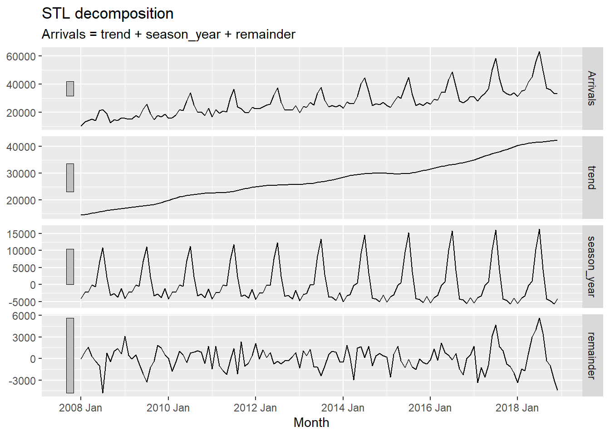
In fable, Exponential Smoothing State Space Models are supported by ETS(). The combinations are specified through the formula:
ETS(y ~ error("A")
+ trend("N")
+ season("N"))<ETS model definition>fit_ses <- vietnam_train %>%
model(ETS(Arrivals ~ error("A")
+ trend("N")
+ season("N")))
fit_ses# A mable: 1 x 2
# Key: Country [1]
Country `ETS(Arrivals ~ error("A") + trend("N") + season("N"))`
<chr> <model>
1 Vietnam <ETS(A,N,N)>Notice that model() of fable package is used to estimate the ETS model on a particular dataset, and returns a mable (model table) object.
A mable contains a row for each time series (uniquely identified by the key variables), and a column for each model specification. A model is contained within the cells of each model column.
Next, gg_tsresiduals() of feasts package is used to check the model assumptions with residuals plots.
gg_tsresiduals(fit_ses)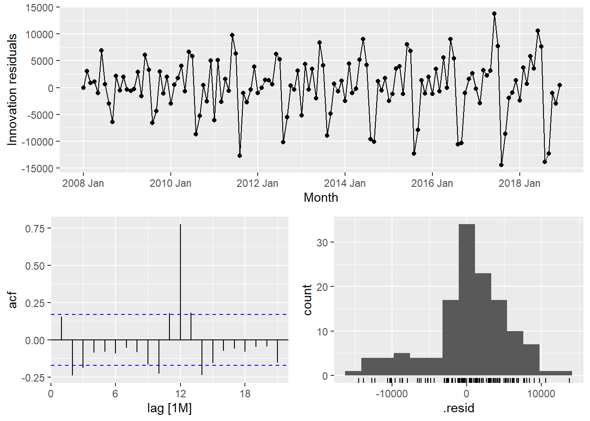
report() of fabletools is be used to reveal the model details.
fit_ses %>%
report()Series: Arrivals
Model: ETS(A,N,N)
Smoothing parameters:
alpha = 0.9998995
Initial states:
l[0]
10312.99
sigma^2: 27939164
AIC AICc BIC
2911.726 2911.913 2920.374 vietnam_H <- vietnam_train %>%
model(`Holt's method` =
ETS(Arrivals ~ error("A") +
trend("A") +
season("N")))
vietnam_H %>% report()Series: Arrivals
Model: ETS(A,A,N)
Smoothing parameters:
alpha = 0.9998995
beta = 0.0001004625
Initial states:
l[0] b[0]
13673.29 525.8859
sigma^2: 28584805
AIC AICc BIC
2916.695 2917.171 2931.109 vietnam_HAd <- vietnam_train %>%
model(`Holt's method` =
ETS(Arrivals ~ error("A") +
trend("Ad") +
season("N")))
vietnam_HAd %>% report()Series: Arrivals
Model: ETS(A,Ad,N)
Smoothing parameters:
alpha = 0.9998999
beta = 0.0001098602
phi = 0.9784562
Initial states:
l[0] b[0]
13257.28 523.54
sigma^2: 28641536
AIC AICc BIC
2917.921 2918.593 2935.218 Check the model assumptions with residuals plots.
gg_tsresiduals(vietnam_H)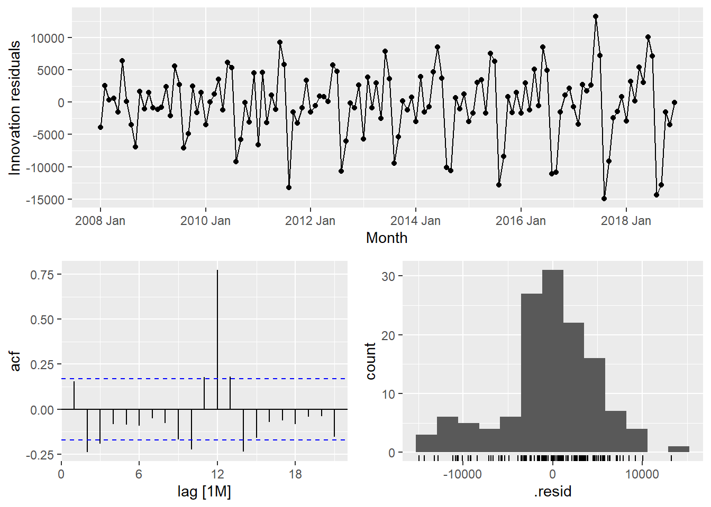
gg_tsresiduals(vietnam_HAd)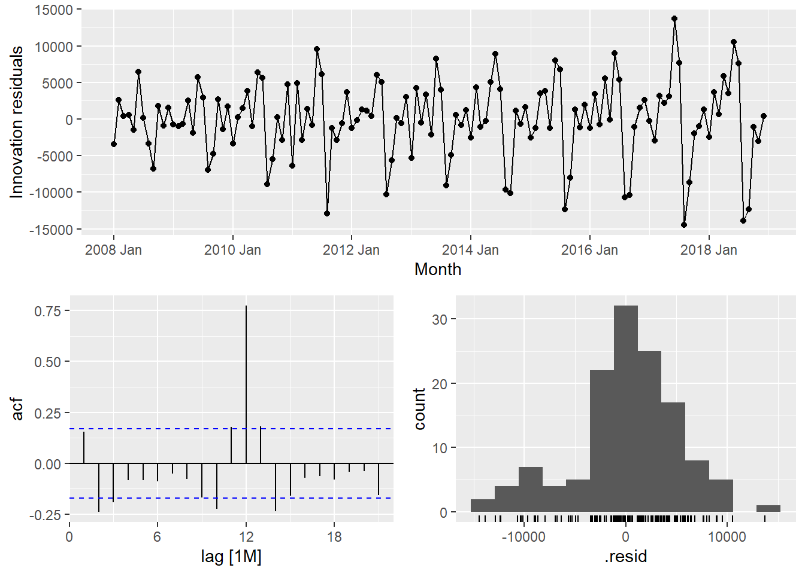
Vietnam_WH <- vietnam_train %>%
model(
Additive = ETS(Arrivals ~ error("A")
+ trend("A")
+ season("A")),
Multiplicative = ETS(Arrivals ~ error("M")
+ trend("A")
+ season("M"))
)
Vietnam_WH %>% report()# A tibble: 2 × 10
Country .model sigma2 log_lik AIC AICc BIC MSE AMSE MAE
<chr> <chr> <dbl> <dbl> <dbl> <dbl> <dbl> <dbl> <dbl> <dbl>
1 Vietnam Additive 5.33e+6 -1336. 2706. 2711. 2755. 4.68e6 8.56e6 1.72e+3
2 Vietnam Multiplicative 4.55e-3 -1300. 2635. 2640. 2684. 3.05e6 3.42e6 5.20e-2fit_ETS <- vietnam_train %>%
model(`SES` = ETS(Arrivals ~ error("A") +
trend("N") +
season("N")),
`Holt`= ETS(Arrivals ~ error("A") +
trend("A") +
season("N")),
`damped Holt` =
ETS(Arrivals ~ error("A") +
trend("Ad") +
season("N")),
`WH_A` = ETS(
Arrivals ~ error("A") +
trend("A") +
season("A")),
`WH_M` = ETS(Arrivals ~ error("M")
+ trend("A")
+ season("M"))
)tidy() of fabletools is be used to extract model coefficients from a mable.
fit_ETS %>%
tidy()# A tibble: 45 × 4
Country .model term estimate
<chr> <chr> <chr> <dbl>
1 Vietnam SES alpha 1.00
2 Vietnam SES l[0] 10313.
3 Vietnam Holt alpha 1.00
4 Vietnam Holt beta 0.000100
5 Vietnam Holt l[0] 13673.
6 Vietnam Holt b[0] 526.
7 Vietnam damped Holt alpha 1.00
8 Vietnam damped Holt beta 0.000110
9 Vietnam damped Holt phi 0.978
10 Vietnam damped Holt l[0] 13257.
# ℹ 35 more rowsglance() of fabletool
fit_ETS %>%
report()# A tibble: 5 × 10
Country .model sigma2 log_lik AIC AICc BIC MSE AMSE MAE
<chr> <chr> <dbl> <dbl> <dbl> <dbl> <dbl> <dbl> <dbl> <dbl>
1 Vietnam SES 2.79e+7 -1453. 2912. 2912. 2920. 27515844. 5.99e7 3.91e+3
2 Vietnam Holt 2.86e+7 -1453. 2917. 2917. 2931. 27718599. 6.03e7 3.92e+3
3 Vietnam damped Holt 2.86e+7 -1453. 2918. 2919. 2935. 27556629. 5.97e7 3.92e+3
4 Vietnam WH_A 5.33e+6 -1336. 2706. 2711. 2755. 4684271. 8.56e6 1.72e+3
5 Vietnam WH_M 4.55e-3 -1300. 2635. 2640. 2684. 3046059. 3.42e6 5.20e-2To forecast the future values, forecast() of fable will be used. Notice that the forecast period is 12 months.
fit_ETS %>%
forecast(h = "12 months") %>%
autoplot(vietnam_ts,
level = NULL)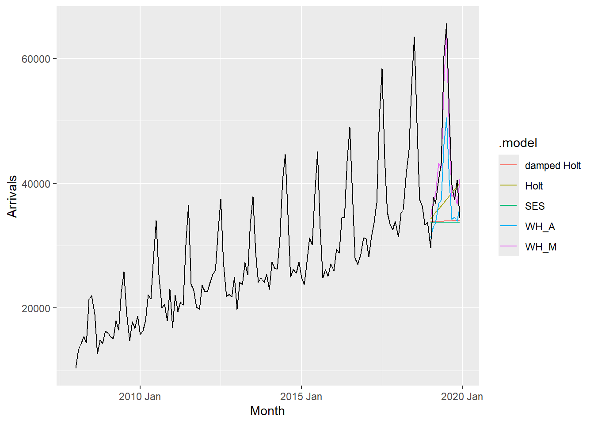
fit_autoETS <- vietnam_train %>%
model(ETS(Arrivals))
fit_autoETS %>% report()Series: Arrivals
Model: ETS(M,A,M)
Smoothing parameters:
alpha = 0.1613503
beta = 0.0001021811
gamma = 0.0001030996
Initial states:
l[0] b[0] s[0] s[-1] s[-2] s[-3] s[-4] s[-5]
15001.12 212.3552 0.9167302 0.8311728 0.8739287 0.8690543 1.104668 1.485584
s[-6] s[-7] s[-8] s[-9] s[-10] s[-11]
1.311207 0.9917759 1.014187 0.8973028 0.8816768 0.8227129
sigma^2: 0.0046
AIC AICc BIC
2634.751 2640.119 2683.759 Next, we will check the model assumptions with residuals plots by using gg_tsresiduals() of feasts package
gg_tsresiduals(fit_autoETS)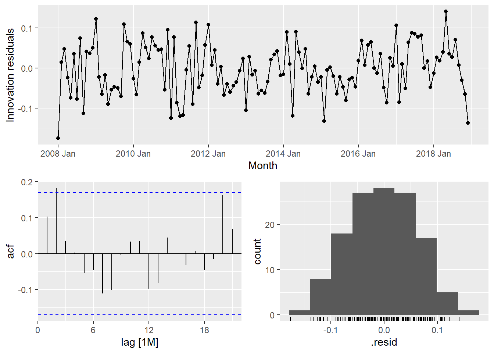
In the code chunk below, forecast() of fable package is used to forecast the future values. Then, autoplot() of feasts package is used to see the training data along with the forecast values.
fit_autoETS %>%
forecast(h = "12 months") %>%
autoplot(vietnam_train)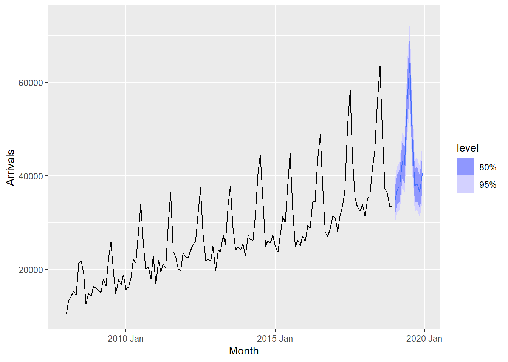
There are time that we are interested to visualise relationship between training data and fit data and forecasted values versus the hold-out data.
Code chunk below is used to create the data visualisation in previous slide.
fc_autoETS <- fit_autoETS %>%
forecast(h = "12 months")
vietnam_ts %>%
ggplot(aes(x=`Month`,
y=Arrivals)) +
autolayer(fc_autoETS,
alpha = 0.6) +
geom_line(aes(
color = Type),
alpha = 0.8) +
geom_line(aes(
y = .mean,
colour = "Forecast"),
data = fc_autoETS) +
geom_line(aes(
y = .fitted,
colour = "Fitted"),
data = augment(fit_autoETS))
feasts package provides a very handy function for visualising ACF and PACF of a time series called gg_tsdiaply().
vietnam_train %>%
gg_tsdisplay(plot_type='partial')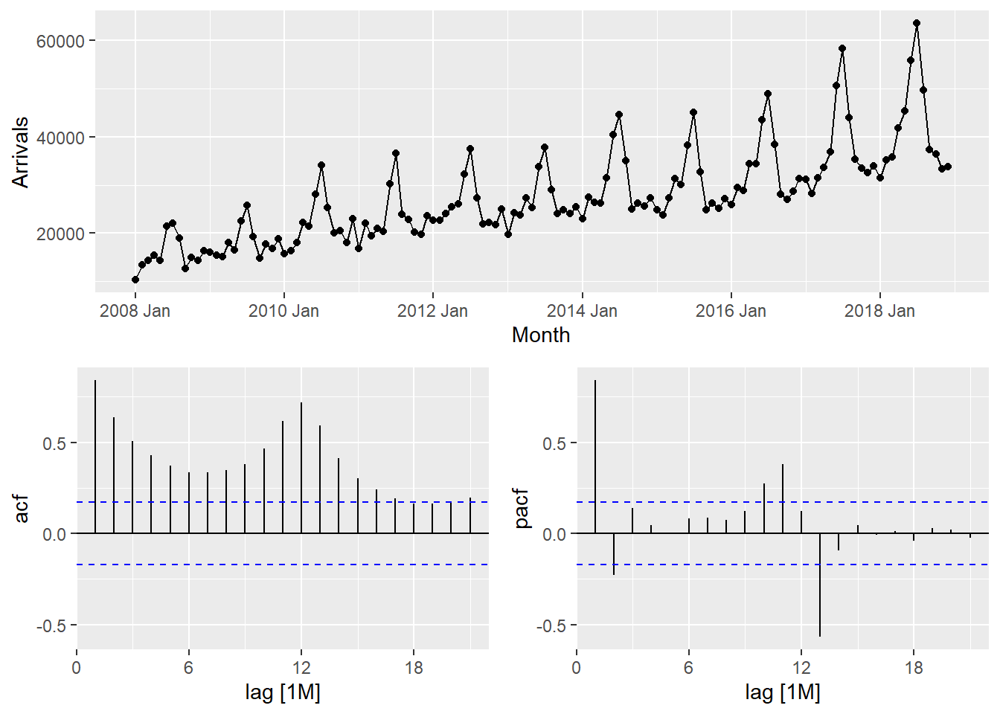
tsibble_longer %>%
filter(`Country` == "Vietnam") %>%
ACF(Arrivals) %>%
autoplot()
tsibble_longer %>%
filter(`Country` == "United Kingdom") %>%
ACF(Arrivals) %>%
autoplot()
By comparing both ACF plots, it is clear that visitor arrivals from United Kingdom were very seasonal and relatively weaker trend as compare to visitor arrivals from Vietnam.
tsibble_longer %>%
filter(Country == "Vietnam") %>%
gg_tsdisplay(difference(
Arrivals,
lag = 1),
plot_type='partial')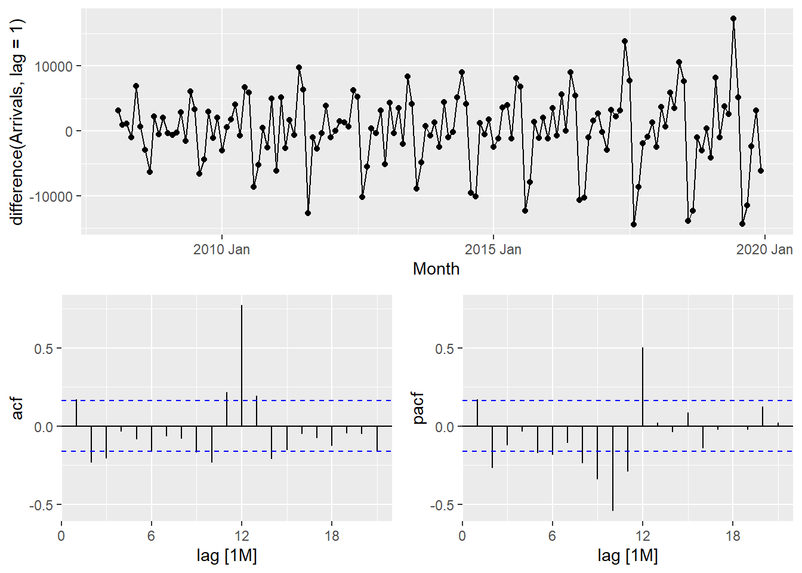
tsibble_longer %>%
filter(Country == "Vietnam") %>%
gg_tsdisplay(difference(
Arrivals,
difference = 12),
plot_type='partial')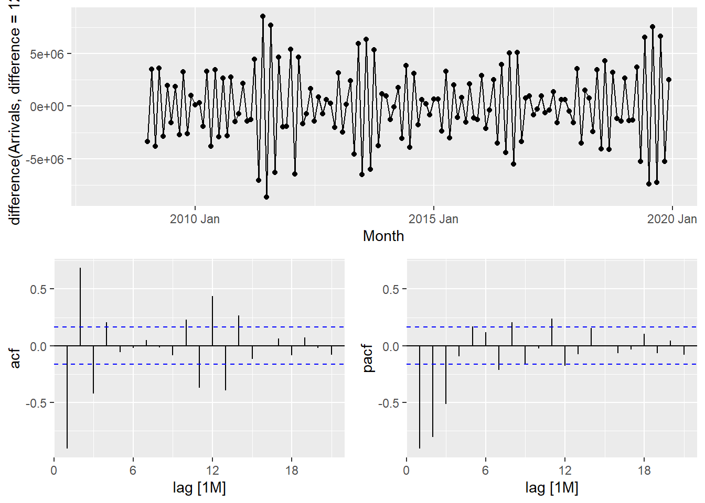
The PACF is suggestive of an AR(1) model; so an initial candidate model is an ARIMA(1,1,0). The ACF suggests an MA(1) model; so an alternative candidate is an ARIMA(0,1,1).
fit_arima <- vietnam_train %>%
model(
arima200 = ARIMA(Arrivals ~ pdq(2,0,0)),
sarima210 = ARIMA(Arrivals ~ pdq(2,0,0) +
PDQ(2,1,0))
)
report(fit_arima)# A tibble: 2 × 9
Country .model sigma2 log_lik AIC AICc BIC ar_roots ma_roots
<chr> <chr> <dbl> <dbl> <dbl> <dbl> <dbl> <list> <list>
1 Vietnam arima200 4173906. -1085. 2181. 2182. 2198. <cpl [26]> <cpl [0]>
2 Vietnam sarima210 4173906. -1085. 2181. 2182. 2198. <cpl [26]> <cpl [0]>fit_autoARIMA <- vietnam_train %>%
model(ARIMA(Arrivals))
report(fit_autoARIMA)Series: Arrivals
Model: ARIMA(2,0,0)(2,1,0)[12] w/ drift
Coefficients:
ar1 ar2 sar1 sar2 constant
0.4748 0.1892 -0.5723 -0.1578 1443.2068
s.e. 0.0924 0.0903 0.0989 0.1032 188.9468
sigma^2 estimated as 4173906: log likelihood=-1084.6
AIC=2181.19 AICc=2181.94 BIC=2197.92bind_rows(
fit_autoARIMA %>% accuracy(),
fit_autoETS %>% accuracy(),
fit_autoARIMA %>%
forecast(h = 12) %>%
accuracy(vietnam_ts),
fit_autoETS %>%
forecast(h = 12) %>%
accuracy(vietnam_ts)) %>%
select(-ME, -MPE, -ACF1)# A tibble: 4 × 8
Country .model .type RMSE MAE MAPE MASE RMSSE
<chr> <chr> <chr> <dbl> <dbl> <dbl> <dbl> <dbl>
1 Vietnam ARIMA(Arrivals) Training 1907. 1458. 5.37 0.491 0.517
2 Vietnam ETS(Arrivals) Training 1745. 1386. 5.29 0.467 0.473
3 Vietnam ARIMA(Arrivals) Test 2647. 2136. 5.17 0.720 0.717
4 Vietnam ETS(Arrivals) Test 3163. 2636. 6.64 0.889 0.857In this section, we will perform time series forecasting on multiple time series at one goal. For the purpose of the hand-on exercise, visitor arrivals from five selected ASEAN countries will be used.
First, filter() is used to extract the selected countries’ data.
ASEAN <- tsibble_longer %>%
filter(Country == "Vietnam" |
Country == "Malaysia" |
Country == "Indonesia" |
Country == "Thailand" |
Country == "Philippines")Next, mutate() is used to create a new field called Type and populates their respective values. Lastly, filter() is used to extract the training data set and save it as a tsibble object called ASEAN_train.
ASEAN_train <- ASEAN %>%
mutate(Type = if_else(
`Month-Year` >= "2019-01-01",
"Hold-out", "Training")) %>%
filter(Type == "Training")In the code chunk below auto ETS and ARIMA models are fitted by using model().
ASEAN_fit <- ASEAN_train %>%
model(
ets = ETS(Arrivals),
arima = ARIMA(Arrivals)
)The glance() of fabletools provides a one-row summary of each model, and commonly includes descriptions of the model’s fit such as the residual variance and information criteria.
ASEAN_fit %>%
glance()# A tibble: 10 × 12
Country .model sigma2 log_lik AIC AICc BIC MSE AMSE MAE
<chr> <chr> <dbl> <dbl> <dbl> <dbl> <dbl> <dbl> <dbl> <dbl>
1 Indonesia ets 1.02e-2 -1561. 3156. 3161. 3205. 1.74e8 1.80e8 0.0732
2 Indonesia arima 1.48e+8 -1290. 2589. 2590. 2603. NA NA NA
3 Malaysia ets 4.67e-3 -1430. 2894. 2899. 2943. 2.04e7 2.00e7 0.0506
4 Malaysia arima 2.62e+7 -1185. 2378. 2379. 2390. NA NA NA
5 Philippines ets 3.56e-3 -1343. 2722. 2728. 2774. 5.28e6 7.58e6 0.0461
6 Philippines arima 8.04e+6 -1122. 2260. 2262. 2283. NA NA NA
7 Thailand ets 6.63e-3 -1343. 2722. 2728. 2774. 5.40e6 6.33e6 0.0584
8 Thailand arima 8.51e+6 -1127. 2269. 2270. 2288. NA NA NA
9 Vietnam ets 4.55e-3 -1300. 2635. 2640. 2684. 3.05e6 3.42e6 0.0520
10 Vietnam arima 4.17e+6 -1085. 2181. 2182. 2198. NA NA NA
# ℹ 2 more variables: ar_roots <list>, ma_roots <list>Be wary though, as information criteria (AIC, AICc, BIC) are only comparable between the same model class and only if those models share the same response (after transformations and differencing).
The fitted values and residuals from a model can obtained using fitted() and residuals() respectively. Additionally, the augment() function may be more convenient, which provides the original data along with both fitted values and their residuals.
ASEAN_fit %>%
augment()# A tsibble: 1,320 x 7 [1M]
# Key: Country, .model [10]
Country .model Month Arrivals .fitted .resid .innov
<chr> <chr> <mth> <dbl> <dbl> <dbl> <dbl>
1 Indonesia ets 2008 Jan 62683 56534. 6149. 0.109
2 Indonesia ets 2008 Feb 47834 46417. 1417. 0.0305
3 Indonesia ets 2008 Mar 64688 62660. 2028. 0.0324
4 Indonesia ets 2008 Apr 58074 61045. -2971. -0.0487
5 Indonesia ets 2008 May 57089 62280. -5191. -0.0833
6 Indonesia ets 2008 Jun 70118 75791. -5673. -0.0749
7 Indonesia ets 2008 Jul 73805 78691. -4886. -0.0621
8 Indonesia ets 2008 Aug 58015 61910. -3895. -0.0629
9 Indonesia ets 2008 Sept 63730 74518. -10788. -0.145
10 Indonesia ets 2008 Oct 71206 67869. 3337. 0.0492
# ℹ 1,310 more rowsIn the code chunk below, accuracy() is used to compare the performances of the models.
ASEAN_fit %>%
accuracy() %>%
arrange(Country)# A tibble: 10 × 11
Country .model .type ME RMSE MAE MPE MAPE MASE RMSSE ACF1
<chr> <chr> <chr> <dbl> <dbl> <dbl> <dbl> <dbl> <dbl> <dbl> <dbl>
1 Indonesia ets Trai… -1.81e3 13187. 9665. -1.83 7.57 0.556 0.619 -0.236
2 Indonesia arima Trai… -9.54e1 11351. 8382. -0.136 6.38 0.482 0.533 -0.00802
3 Malaysia ets Trai… -6.78e2 4515. 3538. -1.25 5.15 0.529 0.527 -0.288
4 Malaysia arima Trai… -2.33e1 4801. 3684. -0.109 5.20 0.551 0.561 -0.00933
5 Philippi… ets Trai… -2.35e0 2298. 1897. -0.334 4.64 0.464 0.408 0.0400
6 Philippi… arima Trai… 9.53e0 2624. 1934. -0.269 4.60 0.473 0.466 0.00717
7 Thailand ets Trai… 1.97e1 2323. 1773. -0.511 5.89 0.489 0.485 -0.0812
8 Thailand arima Trai… 5.88e1 2710. 1932. -0.562 6.16 0.532 0.565 -0.0112
9 Vietnam ets Trai… -3.52e1 1745. 1386. -0.728 5.29 0.467 0.473 0.279
10 Vietnam arima Trai… 1.95e0 1907. 1458. -0.671 5.37 0.491 0.517 0.0136 Forecasts from these models can be produced directly as our specified models do not require any additional data.
ASEAN_fc <- ASEAN_fit %>%
forecast(h = "12 months")In the code chunk below autoplot() of feasts package is used to plot the raw and fitted values.
ASEAN_fc %>%
autoplot(ASEAN)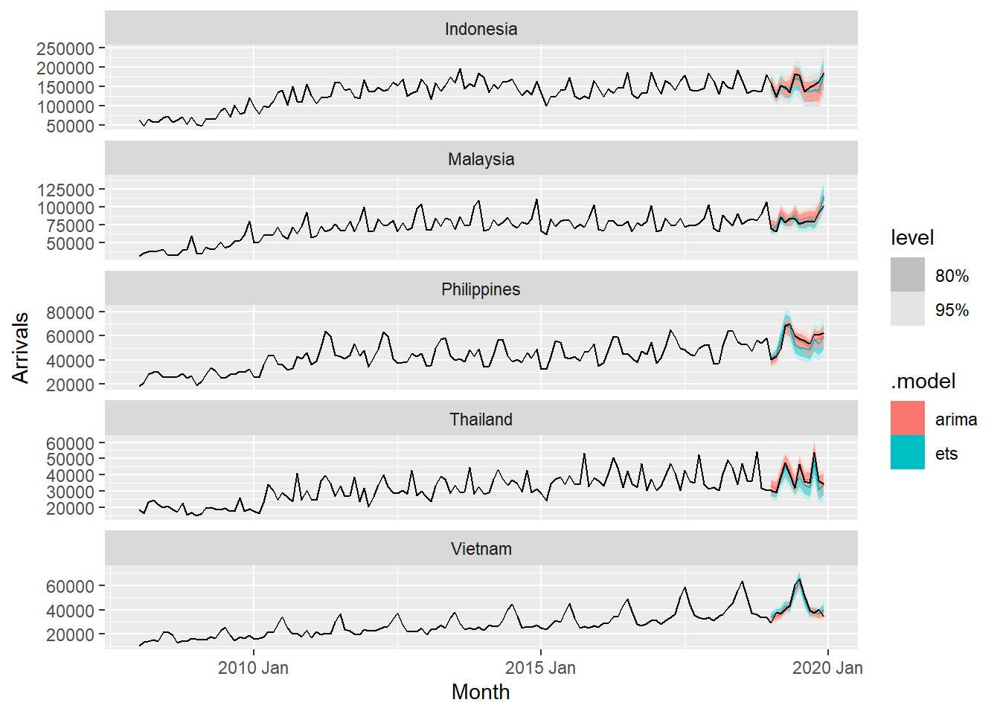